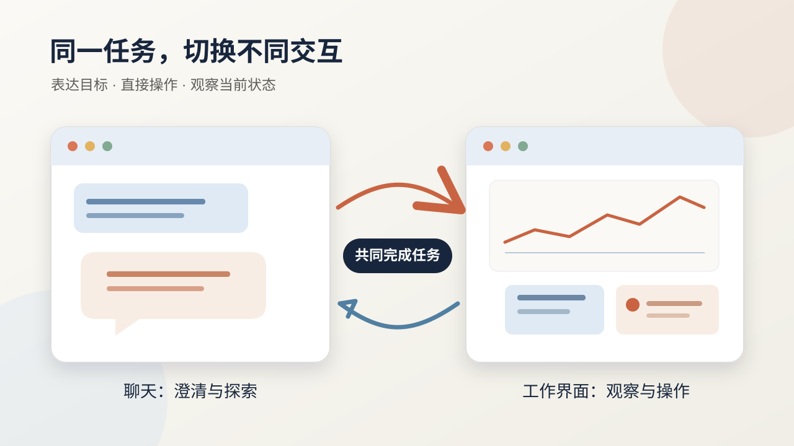

前段时间讨论 AI 产品的交互设计时，我重新想起一个原本很自然的判断：既然 AI 已经能理解自然语言、调用工具替用户完成操作，未来多数软件是不是只需要一个聊天入口？但当这个想法落到具体产品里，卡片、列表和表格能同时展示很多信息、方便横向比较，这些优势并没有因为 AI 能回答问题就消失。
更让我在意的是用户重新打开产品时会遇到什么。在以聊天记录为主要组织方式的产品里，上次生成的表格可能仍停留在当时的结果；如果想知道现在有哪些待办、哪个任务出现异常，往往还得再问一次。一个接入持续更新数据的看板，则可以在打开时直接看到当前状态。这不是聊天技术无法实时刷新，而是过去的回答和当前业务状态本来就不是同一回事。
我也注意到，不少手机 App 把 AI 助手放到了首页或一级导航，却保留搜索、浏览、卡片和原有业务界面。一个更灵活的入口出现以后，为什么这些界面仍然有用？这让我想讨论的，不再只是聊天会不会取代 GUI，而是用户在同一个任务的不同环节，究竟需要怎样表达意图、看见信息、修改对象和接续工作。

一、聊天成为入口，不等于聊天适合承担整个产品
聊天最容易体现的优势，是把过去需要寻找功能、理解表单和连续点击的操作，压缩成一句自然语言请求。用户不必知道按钮在哪里，也可以让 AI 帮忙选择路径、执行中间步骤。对意图还不清楚、操作入口又复杂的任务，这种变化很有吸引力。
但得到一次回答，不等于拥有一个可以持续使用的工作对象。用户可能需要并排比较几个结果、反复修改其中一项，也可能隔一段时间回来，接着处理已经发生变化的业务状态。如果产品只能让用户从对话历史里寻找上次的答案，就把查找、比较和恢复上下文的成本留给了下一次使用。一段对话记录不会自动成为一个持续维护的业务状态。 数据来源、更新时间、对象版本和可操作范围，都需要产品另外设计。
这些能力不一定只能放在固定图形界面里：聊天可以连接实时数据，也可以嵌入可直接操作的卡片；原有业务页面同样能加入 AI。值得比较的是，同一个任务在不同环节需要什么信息和控制方式，以及如何让用户不用反复解释同一个对象。这也是为什么要先理解用户的行动过程，再讨论 Chat 和其他界面怎么分工。
二、先分析用户在做什么，再决定用什么界面
要判断聊天和 GUI 的分工，需要先看用户完成任务的行动过程。Donald Norman 在 1984 年的《Stages and Levels in Human–Machine Interaction》中，把人机交互概括为形成意图、选择行动、执行行动、评估结果四个阶段。其中「选择」指把目标转换为可行的行动或命令，并非泛指商品、方案的横向比较。不同交互技术在这些阶段各有优势和代价。论文原文。
| 行动阶段 | 用户在做什么 | 产品需要提供什么支持 |
|---|---|---|
| 意图 | 想达到什么目标 | 帮助用户表达目标、补充约束 |
| 选择 | 用什么方法和操作完成 | 展示可选行动、前提和后果 |
| 执行 | 让选定的操作发生 | 提供操作入口、即时反馈和纠错 |
| 评估 | 结果是否符合目标 | 呈现系统状态、解释变化、发现异常 |
表格第三列是我根据模型作的产品设计转译，不是 Norman 提出的界面分类。聊天可以参与选择、执行和解释结果；菜单、画布、看板也能帮助用户形成意图或理解状态。
Norman 在 1986 年的《Cognitive Engineering》中把行动过程细化为七个活动：建立目标、形成意图、明确行动序列、执行、感知状态、解释状态、评估结果。四阶段适合观察整体过程，七阶段有助于定位更具体的认知断点；实际行动也会跳过或重复某些阶段。《Cognitive Engineering》原文。

监控人员可能先看到异常才决定处理什么；消费者也可能先浏览商品再产生购买目标；Agent 的提醒同样可能触发下一轮行动。行动模型帮助我们定位用户需要怎样的输入、操作和反馈，不规定每个阶段必须对应一种界面。
三、形成意图和选择行动时，聊天什么时候更合适？
用户有一个大致目标，却不知道产品里该找哪个功能、先做哪一步时，聊天可以接住不完整的表达，再通过追问澄清约束、探索路径。它降低了学习菜单和命令的门槛，但并不自动减少后续比较与核验的成本。
美团官方科技页面介绍的「小团」作为 App 内的 AI 入口，承接用户对吃喝玩乐的需求；原有商家、商品和搜索页面仍然存在。已有目标、希望缩小范围的用户可以先描述需求；还没有明确目标的人，则可能更愿意直接浏览。
Amazon 的 Alexa for Shopping 同时提供聊天窗口、主搜索栏提问、搜索结果中的商品比较，以及商品详情页的 AI 摘要。Amazon 官方说明。AI 在不同任务节点提供帮助，不要求用户把搜索、比较和核对全部搬进同一个对话窗口。
如果目标已经明确、操作路径又很熟悉，直接搜索或点击可能比描述需求、等待模型解释再寻找结果更快。浏览也不总是效率问题：有时用户就是想从选项中发现自己的需求。聊天适合降低目标澄清与开放探索的成本；目标越明确、操作越熟悉，就越值得保留直接的搜索和浏览。
四、执行阶段，为什么还需要直接操作界面？
当用户知道要改什么，问题便从「怎么表达」变成「怎么把对象改对」。
Ben Shneiderman 在 1983 年讨论的直接操纵（Direct Manipulation），强调操作对象持续可见、操作快速且可逆、结果即时反馈。论文原文。这是一种交互风格，不等于所有 GUI 都天然具备这些能力。
调整图表范围、移动画布元素或修改规则条件时，用户未必能一次说准最终值，往往需要边看边改、尝试和撤销。直接操作比反复把每一步翻译成自然语言更合适，但界面不一定要固定：AI 也可以先理解高层意图，再生成可持续操作的控件。
CHI 2024 的 DynaVis 就将自然语言修改图表与动态生成的编辑控件结合起来。24 名参与者在其可视化编辑任务中更偏好这种组合，理由包括便于后续调整和即时视觉反馈；这一结果不能直接推广到所有产品。DynaVis 论文。
我设计审核产品时也讨论过一种可能路径：用户上传制度材料，通过聊天让 AI 生成审核规则草案。但草案与正式生效的规则不同，版本、适用范围、生效状态，以及被哪些审核任务引用，都需要明确表示。此前的《AI 正在把“使用软件”和“操作软件”拆开》也记录了这一经历。
由此推导，聊天可以负责澄清目标和生成草案，结构化编辑负责精确修改，版本对比和任务列表负责核对变化与当前状态。这是基于业务约束的设计判断，并非声称原产品已经实现了这些界面。
AI 可以接管一部分操作，但用户仍然需要看见自己正在改变什么，以及改变之后发生了什么。 直接操作的价值是让修改过程可见、可控、可撤销，而不是证明模型能力不足。
五、观察和评估阶段，用户需要看到的是当前状态
执行完成并不意味着任务结束。用户还要判断变化是否生效、是否达到目标；对于持续运行的任务，还要知道当前状态有没有变化。
聊天记录适合保留交流过程，却不天然适合承担持续状态管理。
如果用户每天都要检查待办、订单、审核进度或业务指标，他需要的不只是上一次问答的答案，而是当前状态、变化时间和异常位置。这里的关键不是界面叫 Chat 还是 Dashboard，而是数据是否持续更新、状态是否有明确来源，以及用户回来时能否恢复到当前任务。
Norman 的七阶段模型把结果评估拆成感知状态、解释状态和对照目标。系统不仅要把数据输出给用户，还要帮助用户理解这些数据意味着什么；如果操作结果延迟出现，用户还可能忘记自己刚才做了什么，从而增加评估成本。《Cognitive Engineering》原文。
监控任务还会反过来改变行动起点。用户可能没有先提出一个目标，而是打开看板发现指标越界，或者收到异常提醒，才开始调查和处理。此时，持续可见的状态视图不是聊天回答的装饰，而是用户形成下一步意图的依据。
Graphics Interface 2026 的一项研究直接比较了聊天式自然语言界面与看板（Dashboard）在鱼场数据监控任务中的表现。研究采用被试内设计，24 名来自不同专业的学生都使用两种界面；他们此前没有鱼场数据经验。两种界面使用同一数据集，任务则由行业专家参与验证。任务正确率和系统可用性量表（SUS）评分没有显著差异；在 180 秒限制内，Dashboard 的任务完成率为 87.7%，聊天界面为 70.5%。两种界面的总体任务完成时间存在显著差异，看板更快。经过多重比较校正后，10 项任务中只有 3 项的时间差异仍然显著；NASA-TLX 工作负荷量表的六个维度中，只有时间压力（Temporal Demand）仍然显著，不能把摘要中提到的心理负荷差异写成显著结论。研究论文。
参与者反馈还呈现出更细的分工：他们往往用 Dashboard 查精确数值、快速点击和定位数据点，用聊天做自定义比较和探索；但反复输入提示词会拖慢较长任务，Dashboard 控件在参数和筛选项变多时也可能变得繁琐。这些是特定实验中的参与者反馈，不是对所有用户的普遍结论。
研究任务限定在鱼场监控，参与者也没有鱼场数据经验，因此结果不能外推为看板在所有场景都更好。它提示，在需要持续观察、快速识别变化的任务里，固定布局和并列信息可能减少用户反复描述查询、等待回答和重建上下文的成本。
还要把两个问题分开：状态是否最新，和状态如何呈现，是两项不同的设计决策。 看板可能因为数据管道延迟而过时；聊天也可以通过实时数据接口给出最新结果。产品需要明确数据来源、更新时间、刷新频率，以及用户看到的是实时状态、定时快照还是模型生成的解释。不能仅凭界面形式判断数据是否可信。
从产品设计上看，主动提醒也不是越多越好。只有当事件足够重要、用户确实需要介入时，提醒才有价值；否则它只是把用户从原有工作中打断。持续监控、异常通知和用户主动打开看板，应该作为不同的产品行为设计，而不是统一归入「让 AI 主动找用户」。
六、AI Product Builder 如何选择交互方式？
把前面的理论和案例放回产品设计，第一步不是决定首页放不放聊天框，而是先回答几个具体问题。
- 任务从哪里开始？ 用户已经知道自己要做什么，还是需要浏览、观察或由系统发现异常后才形成目标？前者可以测试聊天入口，后者不能默认要求用户先提问。
- 用户需要怎样理解选项？ 如果约束模糊、需要澄清和探索，语言交互可能更自然；用户不熟悉产品功能时，聊天也可以帮助他找到可行路径。如果需要同时比较多个对象，卡片、列表或表格通常更容易让差异保持可见；熟悉业务和操作路径的专业用户，也可能更偏好稳定、直接的控件。
- 用户需要怎样操作对象？ 一次性、高层级的修改可以交给 AI；高频、精确、需要反复试探的操作，应保留直接操纵或可持续编辑的控件。
- 用户离开后，任务是否还在继续？ 如果需要持续跟踪，就要有持久状态、可靠的数据刷新和重新进入任务的入口，不能只留下上一次的对话记录。
- 出错之后怎样恢复？ 修改是否可撤销，版本是否可比较，高风险操作是否需要预览和确认，执行记录能否追溯？模型负责理解、建议还是执行，边界是否明确？精确计算、规则校验、权限检查和正式写回应由哪个可信服务完成？权威业务状态来自哪个系统，模型生成的解释与正式记录是否清楚区分？这些都应在交互设计时确定，而不是等智能体上线后再补。
最后还要评估整条任务链的成本，而不是只看点击次数或对话轮数。用户表达需求花了多久，系统澄清了几次，用户是否找到需要的信息，是否看懂当前状态，修改后能否发现错误，出错后是否容易恢复，以及不同界面之间是否需要重复解释，这些都会影响真实的完成成本。
固定图形界面、聊天和动态生成 UI 也不必互相排斥。任务结构变化很大、用户需要快速得到专用工作区时，可以考虑动态生成界面；如果某个工作对象会被反复使用、持续更新或多人共同维护，就应该考虑把它保存为稳定、可再次进入的界面，而不是每次从聊天里重新生成。
一个有力的反方判断是：模型足够强以后，用户可能只需要一个自然语言入口，系统再按任务生成临时界面，固定页面逐渐减少。这个方向有现实依据，DynaVis 已经展示了特定可视化编辑任务中生成并持续使用控件的做法。但固定页面减少，不等于直接操作、持续状态和结果恢复的需求消失。更可能被替代的是今天的页面组织方式，而不是用户完成任务所需的这些能力。
AI 时代不需要先选一个唯一入口，再把所有功能塞进去。聊天负责降低表达和探索成本，结构化界面负责让对象、信息和操作保持可见，持续状态机制负责让用户知道事情现在进行到哪里，确认与恢复机制则让执行结果仍然可控。 同一个产品可以同时需要这些能力，真正的设计问题是它们在具体任务中如何衔接。
参考资料
一手理论与原始论文
- Donald A. Norman, “Stages and Levels in Human–Machine Interaction” (1984)
- Donald A. Norman, “Cognitive Engineering” (1986)
- Ben Shneiderman, “Direct Manipulation: A Step Beyond Programming Languages” (1983)
同行评审研究
会议论文公开稿
- Melika Besharati Amirkandeh and Derek Reilly, “A Comparative Evaluation of Natural Language and Dashboard Visualization Interfaces for Data Monitoring Tasks,” Graphics Interface 2026（公开作者稿首页的 DOI 仍为占位符，本文引用其研究方法与结果）